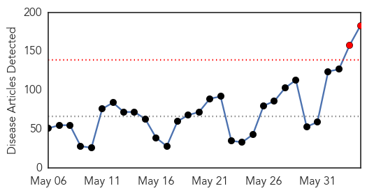
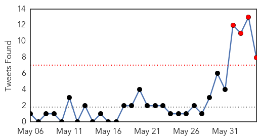
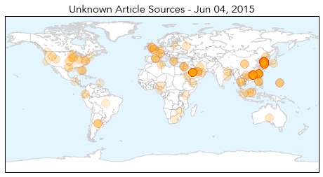
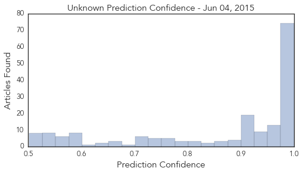
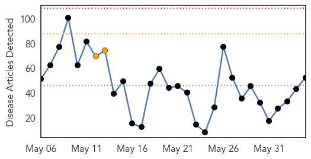
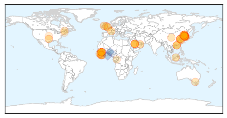

Unknown
30-Day Web Trend
2 alerts, 0 warnings

30-Day Twitter Trend
4 alerts, 0 warnings

Article Locations
Article Confidences
Top Articles:
- 1.000
- Fresh cases, 700 schools closed in S. Korea MERS outbreak
- 1.000
- Mers: Outbreak of virus with no known cure and mortality rate of 40% spreads panic in South Korea amid fears it may have mutated
- 1.000
- South Korea Tries to Contain Deadly MERS Outbreak; 1,369 Quarantined; Two Dead
- 1.000
- Panic grows over MERS outbreak in South Korea, over 700 schools closed
- 1.000
- South Korea grapples to contain MERS as 1,369 in quarantine
- 1.000
- 700 schools closed in S. Korea MERS outbreak
- 1.000
- South Korea grapples to contain MERS as 1,369 in quarantine
- 0.999
- 700 schools closed in South Korea MERS outbreak
- 0.999
- S. Korea president urges action as MERS closes schools - Regional
- 0.999
- Fresh cases, 700 schools closed in S. Korea MERS outbreak
- 0.999
- South Korea reports third death from Mers outbreak
- 0.999
- Fresh cases, 700 schools closed in S. Korea MERS outbreak
- 0.999
- South Korea races to contain MERS virus outbreak, with two dead and 1600 quarantined
- 0.999
- South Korea confirms death of third Mers patient as health authorities close 700 schools
- 0.999
- Schools closed in South Korea MERS outbreak
- 0.999
- Fresh cases, 700 schools closed in South Korea MERS outbreak
- 0.999
- South Korea closes 500 schools to try to contain MERS outbreak
- 0.999
- 700 Schools Closed in South Korea
- 0.999
- 700 South Korean schools, from kinder to college, close over MERS outbreak
- 0.999
- Panic Heightens as South Korea MERS Epidemic Spreads
- 0.999
- Schools are being shut down as a MERS outbreak raises an alarm in South Korea
- 0.999
- S. Korea reports fourth death from MERS outbreak
- 0.999
- NIV enhances lab capabilities to tackle MERS virus threat
- 0.999
- Fresh cases, 900 schools closed in S. Korea MERS outbreak (Update)
- 0.999
- CDC Urges Health Officials To Watch For Bird Flu In Humans
- 0.999
- South Korea scrambles to try to contain MERS outbreak
- 0.999
- The World On Arirang
- 0.998
- 900 schools closed in S Korea MERS outbreak, Others news, Health News, AsiaOne YourHealth
- 0.998
- Fresh cases, 700 schools closed in South Korea MERS outbreak
- 0.998
- (MERS virus) Seoul shuts 700 schools amid 5 more infections
- 0.998
- South Korean doctor may have exposed 1,500 people to MERS
- 0.998
- South Korea Reports Third Death from MERS Outbreak
- 0.998
- Fresh Cases, 900 Schools Closed in S. Korea MERS Outbreak — Naharnet
- 0.998
- Fresh Cases, 900 Schools Closed in S. Korea MERS Outbreak — Naharnet
- 0.998
- Seoul confirms third MERS death
- 0.998
- 1,500 In Seoul Exposed To Doctor With Deadly Virus Who Did Not Quarantine Himself
- 0.998
- Third Patient Dies From South Korean MERS Outbreak
- 0.998
- Fresh cases, 700 schools closed in South Korea MERS outbreak
- 0.998
- The World On Arirang
- 0.998
- 700 schools closed in S. Korea MERS outbreak
- 0.998
- Communication gaps fuel MERS worries in Korea
- 0.998
- iafrica.com Fresh MERS cases in South Korea
- 0.998
- 900 schools closed over MERS
- 0.998
- New MERS cases close over 700 schools in South Korea
- 0.997
- More reason for calm than panic in South Korea's MERS scare
- 0.997
- 900 schools closed in SK MERS outbreak
- 0.997
- Officials Close Hundreds of Schools Amid MERS Outbreak
- 0.997
- More reason for calm than panic in South Korea’s MERS scare
- 0.997
- More reason for calm than panic in South Korea's MERS scare
- 0.997
- Experts say S. Korea can contain MERS with quarantine
Showing top 50 articles...
Top Tweets:
- 0.870
- updates on 9 recent MERS cases in KSA: 7 cases, including a HCW, contracted the virus from a hospital in Hufof. http://t.co/fP1fsdNpmE
- 0.807
- Good thing MERS -CoV isn't very contagious. Seems that far more ppl are contacts than the number that have been placed in quarantine.Korea
- 0.715
- Haz que este tiempo de vals, un, dos, tres, un, dos, tres, no termine jamás.
- 0.685
- Why is South Korea's MERS outbreak so large? Read about patient 1 here: http://t.co/rvv85jzvEa Transferring undiagnosed cases spreads MERs,
- 0.561
- Avian Flu Diary: WHO MERS Update http://t.co/t9Kszb0C87
- 0.519
- The 2014-15 flu season was a moderately severe flu season, but was esp severe for ppl 65 yrs and older http://t.co/pD2DujsKSK
- 0.510
- RT: With recent tertiary MERs infections, Health Ministry has put 1,312 people under quarantine. Graphic by http:/…
- 0.510
- RT: With recent tertiary MERs infections, Health Ministry has put 1,312 people under quarantine. Graphic by http:/…
Ebola
30-Day Web Trend
0 alerts, 2 warnings

30-Day Twitter Trend
0 alerts, 0 warnings

Article Locations
Article Confidences
Top Articles:
- 1.000
- MERS Outbreak Anxiety Spreads to North Korea
- 1.000
- Fourth patient dies of MERS in South Korea
- 1.000
- MERS Outbreak Anxiety Spreads to North Korea
- 1.000
- How dangerous are they?
- 0.999
- Health Dept. confirms 103 monitored in VA for Ebola risk
- 0.999
- South Korea scrambles to contain MERS virus
- 0.999
- Homeland Security Watch Don’t Sleep on MERS
- 0.999
- South Korea scrambles to contain MERS virus
- 0.998
- VICE on HBO: Evolution of a Plague
- 0.998
- What the Ebola Crisis Taught Us About Emergency Preparedness in Africa
- 0.997
- Third MERS Virus Death Reported In South Korea
- 0.997
- Ebola expert: We were very lucky
- 0.993
- West Africa Struggles to Rebuild Its Ravaged Health-Care System
- 0.993
- Seoul confirms third MERS death amid growing fears of contagion
- 0.992
- South Korea to Assist North Korea Amid MERS Outbreak
- 0.991
- Scientists Release Ebola Sequencing Data to Global Research Community Online
- 0.990
- Work of CAFOD honoured « Awoko Newspaper
- 0.989
- South Korea Confirms 2 More Deaths in MERS Outbreak
- 0.987
- Could an antidepressant or heart drug treat Ebola?
- 0.986
- S Korea's MERS efforts ...｜Society｜WCT
- 0.984
- US experts call for more openness
- 0.977
- Three dead, 36 infected as South Korean MERS outbreak continues
- 0.976
- MERS – Several hundred schools in South Korea closed as concerns on MERS outbreak spreads
- 0.976
- Third death in South Korea MERS crisis
- 0.972
- South Korea to help North Korea screen for Mers virus, East Asia News & Top Stories
- 0.971
- S. Korea offers MERS detection devices to N. Korea – The Korea Times
- 0.965
- South Korea to Help North Screen for MERS Carriers
- 0.956
- Seoul to provide quarantine gear to North Korea
- 0.955
- The world is no better prepared today than a year ago to respond to Ebola
- 0.952
- (LEAD) S. Korea to offer MERS detection devices to N. Korea
- 0.948
- A nightmare comes to a close in Liberia as MN's declare it 'Ebola-free'
- 0.948
- S Korea to help N Korea screen for MERS carriers
- 0.948
- S. Korea to offer MERS detection devices to N. Korea
- 0.943
- South Korea to offer MERS detection devices to N. Korea
- 0.940
- The Chosun Ilbo (English Edition): Daily News from Korea
- 0.932
- Habitat destruction is exposing us to a dangerous new form of malaria
- 0.921
- Seoul to provide MERSÂ detection equipment to North Korea
- 0.876
- China donates 16 protocol vehicles to Liberia -
- 0.820
- Ghana's food and drugs body, scientists to hold meeting on Ebola vaccination trials -
- 0.805
- Liberia prepares for border surveillance
- 0.800
- tackling disease in a world of global mobility
- 0.783
- The Logistical Planning of Fighting Ebola in Sierra Leone
- 0.739
- South Korea to help North Korea screen MERS virus at Kaesong
- 0.737
- South Korea to supply North Korea with fever-screening cameras
- 0.720
- China Donates 16 Protocol Vehicles Valued At Over 1M USD To Liberia
- 0.704
- Inverness nurse battles heat and dust in bid to beat Ebola
- 0.686
- Realty assistant aids Ebola response efforts in Liberia
- 0.677
- China Donates 16 Protocol Vehicles Valued At Over 1M USD To Liberia
- 0.613
- Ebola talk enlightens audience at Cheltenham Science Festival
- 0.596
- Ebola Forced Budget Decline
Showing top 50 articles...
Top Tweets:
- 0.990
- Sequencing Data from Ebola Virus Released - GenomeWeb http://t.co/YgjlF6owVn ebola EVD
- 0.973
- MERS and Ebola Replikins Synthetic Vaccine-Blocker™ Candidates Presented ... - PR Newswire (press ... http://t.co/Lskz8gqkGt ebola EVD
- 0.958
- MERS, SARS, Ebola: How dangerous are they? - USA TODAY http://t.co/xnmp0V2LUr ebola EVD
- 0.954
- After Ebola, world still unprepared for global pandemic: MSF - Reuters http://t.co/imNmeyhzfa ebola EVD
- 0.954
- After Ebola, world still unprepared for global pandemic - MSF - Reuters http://t.co/AGIEtzKrSy ebola EVD
- 0.944
- AFRICA: Ebola anywhere, is Ebola everywhere. Text ‘StopEbola’ to 7979 AfricaAgainstEbola
- 0.929
- After Ebola, world still unprepared for global pandemic: MSF - Fox News http://t.co/0BLflWhmne ebola EVD
- 0.910
- Ebola expert: We were very lucky - Belfast Telegraph http://t.co/uLvO8Niykx ebola EVD
- 0.910
- Ebola expert: We were very lucky - Belfast Telegraph http://t.co/uLNgPchYiw ebola EVD
- 0.910
- Ebola expert: We were very lucky - Belfast Telegraph http://t.co/93a0OeApML ebola EVD
- 0.869
- Ebola Update: 27,145 confirmed, probable & suspected cases reported in 3 most affected countries, with 11,147 deaths. EbolaResponse
- 0.842
- WHO agency warns rainy season now hampering Ebola response in West Africa http://t.co/iPIELsLNWe
- 0.775
- 4 June - news pouch on avianflu avianinfluenza Ebola EbolaResponse MERS http://t.co/Xkxr90PJRz
- 0.752
- Drugs to fight Ebola may already be in your medicine cabinet, study suggests - Los Angeles Times http://t.co/1uqUlEOB2g ebola EVD
- 0.694
- RT: WHO - Ebola outbreak in West Africa is not over yet. Learn more w/our EbolaResponse guide: http://t.co/TKmKW1fop4 http://t…
- 0.675
- : 25 casos confirmados de ebola na Guiné e Serra Leoa http://t.co/5TKoGmZdqj
- 0.632
- RT: After Ebola, world still unprepared for global pandemic: Doctors Without Borders http://t.co/gdbLuujcFI
- 0.629
- Turns out, Ebola treatments are likely in our pharmacies—so why aren't we ... - Quartz http://t.co/d055QC5Kvi ebola EVD
- 0.603
- 50% chance of Ebola returning to West Africa http://t.co/v5bqAfX8s3 EbolaResponse
- 0.603
- 50% chance of Ebola returning to West Africa http://t.co/XKy1qTA9Oe
- 0.600
- .@ClausSorensen 'collateral damage of late Ebola response has been the redirecting of resources away from malaria' EDD15 EDD15_health
- 0.590
- After Ebola, world still unprepared for global pandemic: MSF - Reuters http://t.co/1auLCKARaq
- 0.587
- Zoloft as Ebola cure? NIH researchers see promise in drugs already on the market - Washington Post http://t.co/YtJK4r6Brj ebola EVD
- 0.580
- One year after the Ebola outbreak, communications director of reflects on what Sierra Leone has learned http://t.co/gzj962oTI3
- 0.567
- Join us & @WeAre_AU to support African healthworkers to fight Ebola & make Africa healthier AfricaAgainstEbola